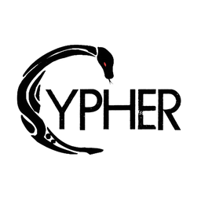
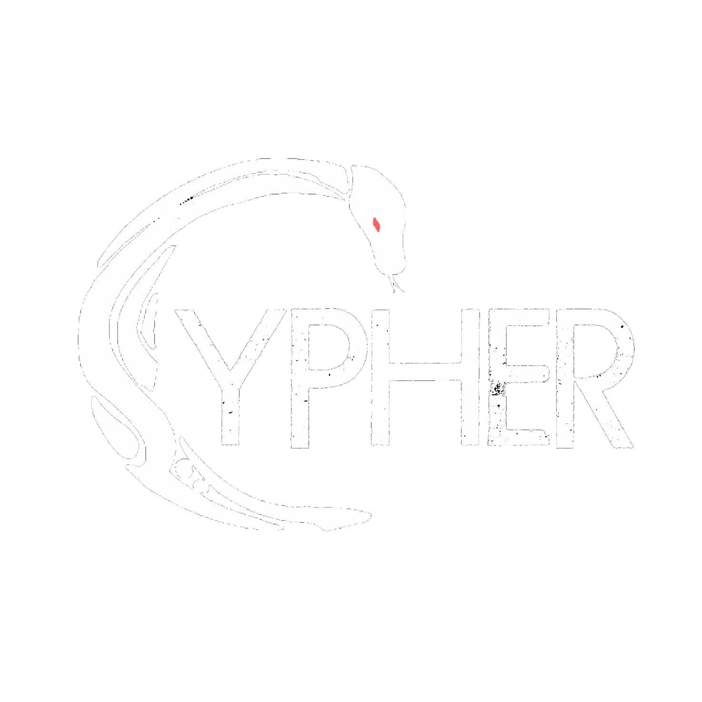

Me & My Skills
About Me
My name is MohammadReza MajidPour.
I became a code analyst not by choice – according to my needs I had to learn and acquire new skills for the tasks at hand. Before I knew it, I had vast knowledge about coding and could understand the purpose of code in front of me without knowing the language.
I have a degree in computer software engineering. I'm deeply interested in C#, Python, and Java, and because of my experience, I master object‑oriented languages faster. I'm also proficient in UI design for software and websites.
Born on November 12, 1997. People describe me as patient, contented, kind, and compassionate. I always look at issues from the other person's perspective and never make hasty decisions. I love first‑person and open‑world video games, and the combination of black and red.
Like the gears of a clock, every part must do its job correctly – I am exactly that gear. I thrive with Agile and Scrum, and if a company has its own unique workflow, I adapt effortlessly. In any case, I dedicate myself fully to the conditions.
Of course I get help from AI – if a blind man suddenly gains the gift of sight, will he still walk with his eyes closed? I use AI as a tool, not a crutch. It helps me overcome mental blocks, explore solutions faster, and refine my code until it truly feels like my own. AI is my collaborator, never my replacement.
Great things are never built alone. While I take full ownership of my work, I believe in the power of collaboration — whether it's with colleagues, open‑source communities, or even AI assistants. If you want to go fast, go alone; if you want to go far, go together. I find the sweet spot where independence meets teamwork, because that's where real innovation happens.
"If a blind man suddenly gains the gift of sight, will he still walk with his eyes closed?" – I use AI as a tool, not a crutch.
Certifications & Honors
- Advanced Python – Coursera
- Unreal Engine Fundamentals – Udemy (in progress)
- English Diploma – Arman Institute (Oct 2012)
- First Aid Course – Red Crescent Society (May 2024) – View Certificate
- Driving Licence (2024)
- 🏆 Honor: Top rank in English Language – Qaemiyeh/Chaharbagh – View Document